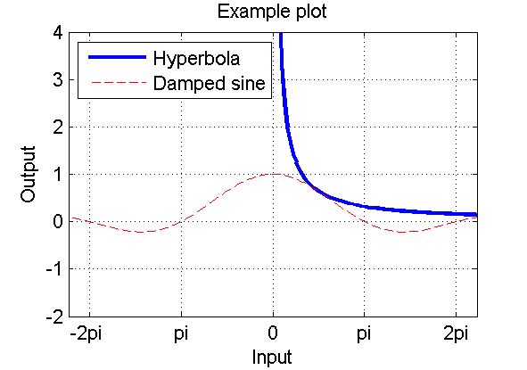
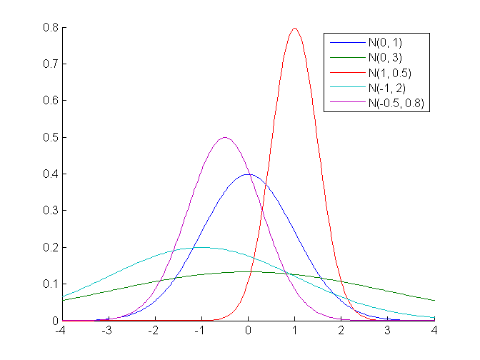
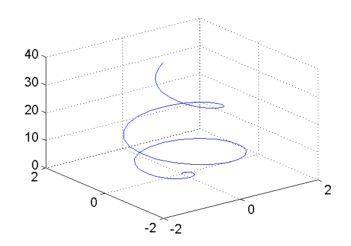
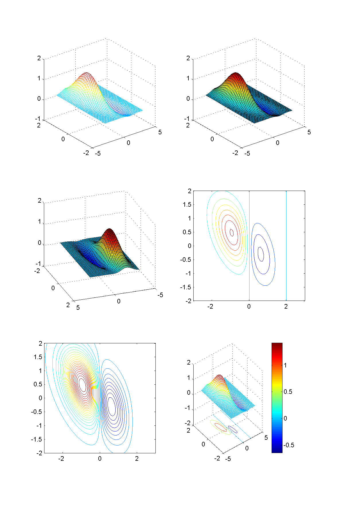
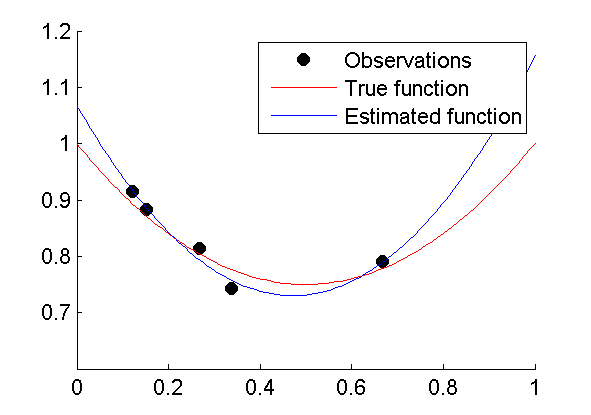
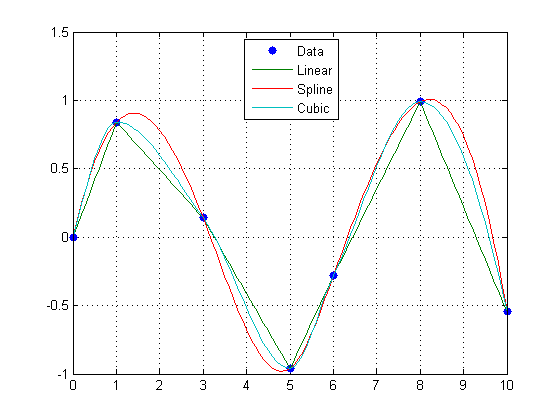

Computational Aspects in Econometrics: MATLAB
Table of Contents
- 1. Overview
- 2. Quick refresher
- 2.1. Simple creation of arrays:
- 2.2. Information about sizes and dimensions:
- 2.3. Combine variables with right dimensions:
- 2.4. Delete rows/columns
- 2.5. Implicit expansion and compatible sizes
- 2.6. Colon operator:
- 2.7. Referencing elements:
- 2.8. Matrix operations
- 2.9. Element-wise operations
- 2.10. Logical operations
- 2.11. If/else
- 2.12. For loop
- 2.13. While loop
- 2.14. Script and function m-files
- 3. Efficient coding
- 4. Cells, structures, and other data types
- 5. Function handles & anonymous functions
- 6. Good coding
- 7. Linear algebra
- 8. Graphics
- 9. Regression
- 10. Interpolation
1 Overview
This document belongs to the course Computational Aspects in Econometrics, and specifically the Matlab module of the course. Note that this page could still be updated during the course. For more information about the course see Canvas.
A university student licencse is available that allows you to install Matlab on your PC/laptop. For instructions, see here.
1.1 Prerequisites
I expect that you are familiar with the Matlab basics:
- basic array operations (vector/matrix)
- creating, accessing elements, the
endindex, colon-operator, deleting columns/rows
- creating, accessing elements, the
- mathematical operations
- creating m-files
- script m-files
- function m-files
- programming
if,for,while,break,continue,switch- logical operators:
~,<=,&,|, etc.
- basic plotting
- important Matlab functions
eye,ones,zeros,diag,size,length,find,min,max,sum,sort,any,all,diff,repmat, etc.
If you lack this basic Matlab knowledge, then you should try to learn it as soon as possible. There are many introductory books and tutorial websites you can choose from. Here is a short selection:
- The official "Getting Started with Matlab", which you can also access through the Matlab help function
- Amos Gilat (2011). MATLAB: An Introduction with Applications, SI Version, 4th Edition
- Matlab tutorials on the web
1.2 Learning goals
Students should be able to…
- apply the Matlab basics (see prerequisites)
- create efficient code by preallocating memory and preventing
unnecessary loops by vectorizing computations, logical indexing and
using functions such as
find,reshape,permute,min,max,sort,all,any,sum - use cell and structure arrays
- use anonymous functions
- function declarations with variable number of input arguments and
default input arguments (
varargin,nargin) - import and export data in different formats (e.g. TXT, CSV, MAT files)
- change advanced figure properties (labels, legends, colors, line styles, etc.)
- create 3D-figures (
surf,meshgrid, etc.) - write "good" code
- use the profiler
- use the debugger
- use the help function to search for built-in functionality and use it (I deliberately give exercises during class and in the assignment for which the solution tool/technique has not been (fully) explained)
1.3 Assignment
The assignment will be announced on Canvas.
- Several small exercises
- Requirements
- Efficient (preallocation, vectorize, etc.)
- Well-documented
- Basic function description
- Explanation of input/output parameters
- Comments on long or non-trivial parts of body
- "Good" code (see Good coding)
1.4 Exam
See Learning goals
1.5 Course material
Online document—the document you are reading now—containing several topics. For each topic we give
- a short introduction and/or some quick illustrations to get the main idea
- references to the official Matlab documentation, which you can also access by using the Matlab help function, and/or other external online information
- the website YAGTOM is a particularly useful reference for the stuff we are interested in
- exercise(s)
Note that you can easily copy the code snippets in this document and paste them in the Matlab command window, unless it is a function definition for which you'll need to create a m-file.
1.6 Course setup
The Matlab classes have the following setup.
- Short introduction to topic
- Hands on: solve exercises
- Recapture: discuss main issues
- Selected hints and/or solutions are published on Canvas after lecture.
As a preparation for the classes, you are asked to read the documentation and examples provided in this document. This will give you a head start during class, because you can start working on the exercises immediately. The number of exercises is probably larger than you can solve during class. Therefore, some exercises will be marked as bonus exercises, which are certainly useful but not crucial to get the main points across.
After the classes, you can still work on the excises you could not finish. You can ask questions about the exercises next class, or on the Discussion board on Canvas.
1.7 How to make the exercises?
This section gives you a few general tips about how to make the exercises, or rather how you should do Matlab coding in general. If you already have some experience with Matlab, then you might have picked up a few bad habits as well.
There are several ways to work with Matlab:
- You can write script m-files and run them from the command line or directly from the editor.
- You can write function m-files and run them from the command line or call them in a script.
- You can type commands on the command line.
- You can write script m-files and run so-called sections, marked by
lines starting with
%%, from the editor. - You can write script m-files and copy and paste selections to the command line.
To make things more complicated, you can combine all of the above in no particular order. This also means that results could depend heavily on the workspace at the time you execute that particular piece of code.
It is obvious that this gives you a lot of flexibility, but can also lead to unstructured results, which may be difficult to replicate as well. Methods 3, 4, and 5 are okay for developing small pieces of code, but if you use them too much, you will get confused, and so will anybody that wants to help you (this could be yours truly). So, try to prevent methods 3, 4, and 5, and always save the entire solution to a problem in a script or function m-file.
So, here is list of useful tips.
- Save all your Matlab files in a dedicated folder on your network
drive or memory stick. Change the current working directory to
this folder using the
cdcommand or the user interface. Alternatively, you can add a folder to the Matlab path usingaddpath. Do not save files on the C-drive or D-drive in the computer lab rooms; you will lose your work. - Write a separate script or function m-file for each exercise. Make
sure to start your script with the
clearstatement to make sure that the script starts in an empty workspace, unless your "logic" depends on repeating the same script more than once—usually it should not. - Try to prevent hard coding and use variables to capture problem data—initialize these variables at the start of the script. Writing functions instead of scripts will allow you to modify problem data in a more flexible way.
- If you write a function, then it might be a good idea to write an accompanying script file testing the function, or calling the function in such a way that it produces the results you want.
- If you came up with clever idea, and want to be sure that you still recall how it works tomorrow, then add comments to your code.
Later, in this section you will get some more information about structuring and documenting your code.
2 Quick refresher
This section is a contains a quick refresher of some basic Matlab stuff. Hopefully, you'll have little problems understanding everything here. Most material is presented by examples.
2.1 Simple creation of arrays:
Rows are separated by semicolons, and columns by commas.
>> A = [1, 2, 3; 4, 5, 6; 7, 8, 9]
A =
1 2 3
4 5 6
7 8 9
>> b = [0; 1; 0]
b =
0
1
0
2.2 Information about sizes and dimensions:
>> size(A)
ans =
3 3
>> ndims(A)
ans =
2
>> size(b)
ans =
3 1
>> length(b)
ans =
3
>> ndims(b)
ans =
2
2.3 Combine variables with right dimensions:
>> [A, b]
ans =
1 2 3 0
4 5 6 1
7 8 9 0
>> [A; b]
Error using vertcat
Dimensions of matrices being concatenated are not consistent.
2.4 Delete rows/columns
>> A
A =
1 4 7
2 5 8
3 6 9
>> A(2,:) = [] % delete second row of A
A =
1 4 7
3 6 9
Alternatively, you can also redefine \(A\): A = A([1, 3],:) (only keep
rows 1 and 3).
2.5 Implicit expansion and compatible sizes
In older version of Matlab you could add a scalar (1x1) to a vector or a matrix, but for other sizes you had to make sure that the dimensions of the operands match exactly. For example, if you want to add a vector to all columns of a matrix, you first had to create copies of the vector to match the number of columns of the matrix and then add the results.
>> A = reshape(1:9, 3, 3)
A =
1 4 7
2 5 8
3 6 9
>> v = [10; 20; 30]
v =
10
20
30
>> A + repmat(v, 1, 3)
ans =
11 14 17
22 25 28
33 36 39
Note that this is a bit inconvenient, but usually this is still faster than doing a for-loop.
Fortunately, recent versions of Matlab use implicit expansion of compatible sizes. We can now just do the following:
>> A + v
ans =
11 14 17
22 25 28
33 36 39
Matlab sees that the number of rows in \(A\) and \(v\) are the same, and expands \(v\) to match the size of matrix \(A\). We can also use this to easily create special matrices:
>> [1, 2, 3] + [10; 20; 30] % add row and column vector
ans =
11 12 13
21 22 23
31 32 33
2.6 Colon operator:
>> 0:8
ans =
0 1 2 3 4 5 6 7 8
>> 0:2:10
ans =
0 2 4 6 8 10
>> -2:0.5:2
ans =
-2.0000 -1.5000 -1.0000 -0.5000 0 0.5000 1.0000 1.5000 2.0000
2.7 Referencing elements:
Note that end can be used to refer to the last element of a certain
dimension.
>> A(2,3)
ans =
6
>> b(2)
ans =
1
>> b([1 3])
ans =
0
0
>> A(1:2, [1 3]) % submatrix
ans =
1 3
4 6
>> A(1,2:end)
ans =
2 3
>> A(:, 2) % select all (rows)
ans =
2
5
8
>> A(end,:) % last row of A
ans =
3 6 9
>> b(:, [1 1 1 1]) % replicate 1st column 4 times
ans =
0 0 0 0
1 1 1 1
0 0 0 0
2.8 Matrix operations
>> A + A
ans =
2 4 6
8 10 12
14 16 18
>> 3*A - 10
ans =
-7 -4 -1
2 5 8
11 14 17
>> A*b % matrix-vector product
ans =
2
5
8
>> A' % transpose
ans =
1 4 7
2 5 8
3 6 9
2.9 Element-wise operations
These are a great tool to prevent the use of loops.
>> 1./A
ans =
1.0000 0.5000 0.3333
0.2500 0.2000 0.1667
0.1429 0.1250 0.1111
>> A.^2
ans =
1 4 9
16 25 36
49 64 81
>> A.*A
ans =
1 4 9
16 25 36
49 64 81
2.10 Logical operations
>> x = 1:10
x =
1 2 3 4 5 6 7 8 9 10
>> x > 5
ans =
1x10 logical array
0 0 0 0 0 1 1 1 1 1
>> x > 2 & x < 7 % logical AND
ans =
1x10 logical array
0 0 1 1 1 1 0 0 0 0
>> x >= 2 & x <= 7
ans =
1x10 logical array
0 1 1 1 1 1 1 0 0 0
>> x <= 2 | x >= 8 % logical OR
ans =
1x10 logical array
1 1 0 0 0 0 0 1 1 1
>> ~ans % logical NOT
ans =
1x10 logical array
0 0 1 1 1 1 1 0 0 0
Short-circuit tests (&& and =||+) prevent the evaluation of the
second part if the value of the first already determines the outcome:
>> x = 1:2
x =
1 2
>> (length(x) > 2) & (x(3) > 0)
Index exceeds matrix dimensions.
>> (length(x) > 2) && (x(3) > 0)
ans =
logical
0
2.11 If/else
if x < 0 | x > 100 disp(’x is negative or larger than 100’) elseif x == round(x) disp(’x is an integer in the range [0,100]’) else disp(’x is a non-integer in the range [0,100]’) end
2.12 For loop
% Compute Fibonacci numbers f = [1, 1]; for n = 3:10 f(n) = f(n-1) + f(n-2); end
2.13 While loop
n = 0; x = 2^(55); % Divide x by 2 as long as it remains greater than 1, but do the division at most 50 times. while x > 1 x = x/2; n = n+1; if n > 50 break % break out of loop end end
2.14 Script and function m-files
A script file is simply a collection of matlab statements. By calling
the script Matlab executes the statements as if you would have typed
them on the command line. Suppose we save the following code in a
file called script1.m.
% It is often a good idea to start your script with a CLEAR statement, % which clears the workspace. clear % Initialize parameters n = 10000; m = [10; 50; 100; 500; 1000; 5000; 10000]; % Put random number generator in default state for reproducibility rng('default') % Get random sample of standard normal distribution x = randn(n, 1); for i = 1:length(m) % Calculate 95% confidence interval for certain sample size y = x(1:m(i)); mu = mean(y); sigma = std(y); ci = mu + norminv(0.975) * sigma / sqrt(m(i)) * [-1, 1]; % Print result fprintf('n = %5d: [%8.4f, %8.4f]\n', m(i), ci); end
Now we can call this script from the command line.
>> script1 n = 10: [ -0.4727, 1.7212] n = 50: [ -0.0659, 0.6340] n = 100: [ -0.1047, 0.3509] n = 500: [ -0.1099, 0.0661] n = 1000: [ -0.0945, 0.0293] n = 5000: [ -0.0075, 0.0477] n = 10000: [ -0.0178, 0.0211]
On the other hand, a function m-file has input and output arguments and has a local workspace. Any arguments or other variables created while the function executes are available only within the function. Conversely, the variables available to the command line (the so-called base workspace) are normally not visible to the function.
function [x1, x2] = quadform(a, b, c) %QUADFORM Return two zeros of quadratic form a*x^2 + b*x + c % % [x1, x2] = quadform(a, b, c) d = sqrt(b^2 - 4*a*c); x1 = (-b + d) / (2*a); x2 = (-b - d) / (2*a);
Functions can be called from the command line or from within other functions.
>> [r1, r2] = quadform(1, -3, 2)
r1 =
2
r2 =
1
3 Efficient coding
3.1 Introduction
One of the most important things that I want you to take away from this course is that you'll produce efficient Matlab code. By this I mean that I don't want to see code for which there is an obvious better solution. Compared to many other programming languages (such as C++, Java, Delphi, etc.) Matlab often requires a different way of thinking. Many complex tasks can be performed in a few lines of code where other languages need many more. Besides being shorter, usually this concise solution performs much faster than the alternative solution, which can used in Matlab as well.
Let's give an example. Suppose that we have a matrix A, say A =
rand(10000,1000), and we want to divide all numbers larger than 0.5
by 2. The straightforward approach, used in many other programming
languages, would be the following:
[m, n] = size(A); for i=1:m for j=1:n if A(i, j)>0.5 A(i, j) = A(i, j)/2; end end end
This solution gets the job done, and if you are not really interested in the performance of this piece of code (because you don't have to perform it many times and/or for large matrices), then there is not much of a problem. However, you don't always know under what circumstances your code will be used in the future. Therefore, it would be nice if you pick up the habit of automatically coding such as problem as follows:
i = A>0.5; A(i) = A(i)/2;
This solution doesn't only perform much faster in Matlab, it has the additional advantage that it also works for numerical arrays with dimensions unequal to two.
The continuous awareness that you should try to develop is "How can I prevent the use of loops?"
In this block, we will look at tools and techniques that you can use to make your Matlab code more efficient and in particular to prevent loops.
3.2 Preallocation
If you are going to use loops anyway, then make sure that you preallocate memory for output arrays. Adding new elements/rows etc. to an existing array is very time consuming.
In the code below, we use the tic/toc commands to time how long it takes to perform the piece of code in encapsulates.
N = 1e6; tic % start stopwatch x = 0; for k = 2:N x(k) = x(k-1) + 5; % expand the existing array end bad = toc tic y = zeros(1, N); % preallocate the output for k = 2:N y(k) = y(k-1) + 5; end good = toc
Output
bad =
0.2769
good =
0.0174
3.3 Element-wise Arithmetic
Try to operate on multi-dimensional arrays as much as possible. Basic
mathematical functions such as sin, exp, log can be applied to
multi-dimensional arrays. A bit less familiar, but a great tool to
get rid of loops, are the basic arithmetic operators .*, ./, .^,
that operate on arrays of the same dimension (or scalars). For
instance:
A = A./B; B = B.^2;
to divide every element in the matrix A by the corresponding element
in B and square the elements in the matrix B. Note that the
latter is different from B^2, which is the matrix product of B
with itself. Experiment with this yourself in Matlab.
3.4 Useful functions
There is quite a number of built-in functions that prevent the usage of loops. Here is a list with a short description and/or example. Probably, you already know some of these commands. Make sure that you are also familiar with the optional extra input and output arguments, which can often be very useful.
- sum, prod
sum(A,2)sums along the second dimension, i.e., over the columns (to give you the row-sum), of the matrixA. Similarly,prod(A,2)multiplies all entries along the second dimension, i.e., over the columns (to give you the row-product), of the matrixA. As an example forsum():
A = reshape(1:24, 4, 6) a1 = sum(A, 1) % Compute columns sums, i.e., sum along first dimension a2 = sum(A, 2) % Compute rows sums, i.e., sum along second dimension a3 = sum(A(:)) % Gives sum of all elements in A. Alternatively, use sum(A,'all').
With output
A =
1 5 9 13 17 21
2 6 10 14 18 22
3 7 11 15 19 23
4 8 12 16 20 24
a1 =
10 26 42 58 74 90
a2 =
66
72
78
84
a3 =
300
If you do not specify a dimension in sum() or prod(), then by default Matlab takes the first dimension.
- mean, std, var
- calculate the mean along a particular dimension of
an array. For the
stdandvarfunctions, the third input argument refers to the dimension—and the second denotes whether you want the population (1) or sample (0/default) standard deviation or variance. See the documention for details. - min, max
- Compute the min/max along a particular dimension (third input argument). Indices of min/max-locations are returned in the second output argument.
A = rand(4, 6) [m1, i1] = min(A, [], 1) [m2, i2] = min(A, [], 2)
Output:
A =
0.0540 0.1299 0.3371 0.5285 0.6541 0.0838
0.5308 0.5688 0.1622 0.1656 0.6892 0.2290
0.7792 0.4694 0.7943 0.6020 0.7482 0.9133
0.9340 0.0119 0.3112 0.2630 0.4505 0.1524
m1 =
0.0540 0.0119 0.1622 0.1656 0.4505 0.0838
i1 =
1 4 2 2 4 1
m2 =
0.0540
0.1622
0.4694
0.0119
i2 =
1
3
2
2
- sort
- similar to min/max, but dimension is the second input argument
- cumsum, cumprod
- cumulative sum (resp. product)
- find
- returns the indices of nonzero elements. Useful in
combination with logical tests, e.g.,
i = find(A>1 & A<2). More attention to this function is given in sections 3.5 and 3.6 below. - all, any
- Generalization of logical and and logical or. Tests whether all entries (any entry) in a particular dimension of an array are (is) nonzero.
A = [1 1 1
0 1 0
0 0 0];
rows = [all(A); any(A)]
cols = [all(A,2), any(A,2)]
Output
rows =
0 0 0
1 1 1
cols =
1 1
0 1
0 0
- diff
- calculate the difference of the elements of an array. For
instance,
diff([1 2 5 8 15])yields[1 3 3 7]. The (optional) second and third input arguments can be used to control the order of the difference and the dimension that should be used. A not so obvious practice of thedifffunction, but very useful, is locating the positions in a vector where the value changes.
x = [10 10 10 20 20 20 20 30 30 40 40 40] d = diff(x) i = [find(d), length(x)] % always include the last entry y = x(i)
-
Here we use that
find(y)returns (as a default) all indices of nonzero elements inyif no other condition is given.
Output:
d =
0 0 10 0 0 0 10 0 10 0 0
i =
3 7 9 12
y =
10 20 30 40
3.5 Logical indexing
In the introductory example, we have already seen the use of logical
indexing. The statement i = A>0.5 returns a logical (0/1 or
false/true) array of the same dimension as A indicating whether or
not the entry is larger than 0.5. Next, A(i) simply returns those
entries. If necessary, find(i) can be used the get the corresponding
(linear) indices (see Linear indexing), but often this is not needed.
See here tutorial about logical indexing.
3.6 Linear indexing
Internally, Matlab stores a numerical array, regardless of its dimension and size, as a 1-dimensional vector. Hence, the 3x4 matrix in the following example is actually stored as a vector of size 12. This explains the results of the following Matlab statements.
A = [11 12 13 14
21 22 23 24
31 32 33 34]
i = find(mod(A,11) == 0) % find indices of multiples of 11
x = A(i)
Output:
A =
11 12 13 14
21 22 23 24
31 32 33 34
i =
1
5
9
x =
11
22
33
The vector i is a linear index into the matrix A. In this example,
A(5) is exactly the same thing as A(2,2). Linear indices can be
translated in the corresponding regular multi-dimensional indices and
vice versa by the functions ind2sub and sub2ind, respectively. See
the Matlab help function for more details of these functions. For
example:
% First argument of ind2sub is a vector with the matrix dimensions. % Second argument contains linear indices (entered as row or column vector). >> [row, col] = ind2sub([3, 4], i') row = 1 2 3 col = 1 2 3 % row and col together give the matrix indices (1,1), (2,2) and (3,3).
3.7 Matrix creation and transformation
You should already be aware of functions like ones, zeros, eyes,
diag, tril, triu to create basic arrays of desired size. Have a look at their documentation otherwise. By
adding functions as repmat, reshape and permute a whole new
window of opportunities opens.
3.7.1 Example: juggling with matrices
Suppose we want to create the matrix
A =
1 2
1 2
1 2
3 4
3 4
3 4
5 6
5 6
5 6
We can see there is a clear structure: it's a 3-by-2 block matrix with as the blocks 3-by-1 vectors with the numbers 1 to 6. Let's try to create this matrix using the matrix creation and transformation function Matlab offers.
Let's first solve an easier problem. Suppose the blocks are simply
scalars. Then the matrix can be obtained by using reshape.
>> reshape(1:6, 2, 3)'
ans =
1 2
3 4
5 6
Note that we first reshape to a \(2 \times 3\) matrix and then transpose afterward. You can see why if you try to reshape to a \(3 \times 2\) matrix straight away.
>> reshape(1:6, 3, 2)
ans =
1 4
2 5
3 6
The numbers 1 to 6 are in the wrong order now, because Matlab fills the entries by linear indexing, i.e., along the first dimension first.
Now back to the original problem. We try the previous approach on 3-by-1 blocks. First, we create the matrix
>> A = repmat(1:6, 3, 1)
A =
1 2 3 4 5 6
1 2 3 4 5 6
1 2 3 4 5 6
Note that we cannot simply reshape to a \(9 \times 2\) or a transposed \(2 \times 9\) matrix as you can see below.
>> reshape(A, [9, 2])
ans =
1 4
1 4
1 4
2 5
2 5
2 5
3 6
3 6
3 6
>> reshape(A, [2, 9])'
ans =
1 1
1 2
2 2
3 3
3 4
4 4
5 5
5 6
6 6
Again the reason is that Matlab creates the matrices using the linear index. The solution is to temporarily add a third dimension.
>> B = reshape(A, [3, 2, 3])
B(:,:,1) =
1 2
1 2
1 2
B(:,:,2) =
3 4
3 4
3 4
B(:,:,3) =
5 6
5 6
5 6
The result is a \(3 \times 2 \times 3\) double array. You can interpret
this as a cube with three layers of \(3 \times 2\) matrices. Note that
reshaping an array does not change the linear indices, i.e., A(i) is
identical to B(i) for any scalar index \(i\). If we want Matlab to
move the block of 3s after the 1s (replacing the 2s), then we need to
permute the array. Permuting an array is nothing more than swapping
indices. Transposing a matrix is an example of an permutation:
\((X^T)_{ij} = X_{ji}\): the first and second dimension of the
transposed matrix correspond, respectively, to the second and first
dimension of the original matrix. We define an array C by swapping
the 2nd and 3rd dimension of the array B above: \(C_{ijl} = B_{ilj}\).
>> C = permute(B, [1, 3, 2])
C(:,:,1) =
1 3 5
1 3 5
1 3 5
C(:,:,2) =
2 4 6
2 4 6
2 4 6
This results in a \(3 \times 3 \times 2\) array. Now the linear index is exactly lined up the way we want: if we reshape back to 2 dimensions this array, we get our desired result.
>> D = reshape(C, [9, 2])
D =
1 2
1 2
1 2
3 4
3 4
3 4
5 6
5 6
5 6
3.8 Profiling
If you are really interested in optimizing your code, then Matlab's profiler is a very useful tool. It presents you an overview of how many times a specific function or line of code was executed and how many time was spent there. This gives you a good indication where you should try to improve your code. The profiler can easily be activated from the Matlab Editor interface using the button Run and Time.
See Profiling tutorial. You can stop watching when he starts talking
about using parallel processing using multiple cores simultaneously
(parpool and parfor) at about 4:30. You do not need to know this.
3.9 Debugging
More important than the efficiency of your code is of course that the code does what it should do. If it doesn't, then you should debug your code. You can do this by looking at your code and try to spot the bug, but sometimes it is more convenient to use Matlab's debugging tools. In that way you can go over the execution of your code step by step. Often that can give you ideas about improving the efficiency of your code as well.
The debugger can also be easily accessed from the Matlab Editor interface. You can set a breakpoint on any line in your code by pressing F12. If you run the code, the execution halts at this line. After that you get the option to execute the code line by line, either bypassing function calls or diving into the function calls on a particular line.
See Debugging tutorial.
3.10 Final remarks
The tools we have discussed in this block enable a Matlab programmer to write very powerful programs with a few lines of code. The danger exists that this code becomes difficult to read, even to the programmer himself. Therefore, it is the programmer's responsibility to add appropriate comments to the code if necessary.
It's up to you to find the right balance between producing efficient code on the one hand, and having an efficient coding process on the other hand. It doesn't make sense to spend one hour optimizing your code, if you're applying it only once on a small or medium sized data set. However, it would be nice if you are able to optimize your code if necessary. If you try to change your way of thinking is this respect, it often goes automatically in practice. Hence, avoid loops as much as you can anywhere during this course (and forever after!). During the exam, some of your abilities in this respect will be tested!
Very useful functions to prevent the use of loops, but outside the
scope of our course, are arrayfun, cellfun. If you
really need to address speed issues of your Matlab code, then have a
look at these functions. See the Matlab help and Yagtom.
3.11 Exercises
3.11.1 Student grades
Define a three-dimensional array using the statements
n = [4, 2, 10]
A = 10 * rand(n)
Perform the following tasks without using loops.
- Suppose that the entries in the matrix represent grades. Round the grades to halves. The only exception is that the grade 5.5 is not allowed; these grades have to be rounded to 5 or 6. Hint: use a logical index to locate the grades between 5 and 6. Then perform the one rounding operation on these grades, and another rounding operation on the grades not between 5 and 6.
- Create a matrix B with three columns for which the rows represent
the indices into the matrix A that correspond to sufficient grades
(>=6). Hence, if
A(2,1,5)is greater or equal to 6, then[2, 1, 5]is one of the rows ofB. Useind2sub. - The matrix contains the grades for 10 students who each did 2
assignments of 4 questions each. Calculate the students' overall
grades, which is determined by the arithmetic mean of the in total
8 questions. Did you use the
meanfunction once or twice? Try using it only once. (Hint: usereshape.)
3.11.2 Euclidean distance
Let the rows of the \(m \times n\) matrix \(X\) represent \(m\) vectors in \(n\)-dimensional space. We want to create a \(m \times m\) matrix \(D\) such that \(D_{ij}=\|x_i-x_j\|_2\), i.e., the Euclidean distance (2-norm) between the ith and jth row of \(X\). We want to write a function for this purpose.
- Implement the "standard" approach using two loops to generate all combinations of vectors \(i\) and \(j\).
- The final step is to make an even more efficient implementation by using only a single loop. Pick a vector \(i\) and calculate its distance to all the other vectors \(j\; (j>i)\). Finally, note that the distance matrix is symmetric.
- Write a script file that tests the performance of your two
implementations on a random matrix of size \(1000 \times 10\). Use
ticandtocto time the methods.
3.11.3 Find the bug
In this exercise you'll have to find an error in a function. It is not a syntax error, but a logical error, which might lead to errors or simply returns an unintended answer. If you can't find such an error right away, then a good alternative is to use the Debugger. Walk through the function step by step and examine intermediate output.
Save the file rebalance.m on your Matlab path. This function is supposed to convert a time series, represented by a vector, such that it does no longer contains negative entries. It does so by transfering negative entries backwards in time, such that the sum of entries does not change (unless there is a negative entry in period 1). In case there is a negative entry in period 1, it is replaced by zero (i.e., the negative entry is pushed towards the imaginary period 0 if you will). For instance, if \(x=(4,-2,1)\), then the negative entry in period two can be combined with the 4 in the first period. This yields the corrected series \(\tilde{x}=(2,0,1)\). If the function works correctly, it should give the output shown in the example below.
>> y = rebalance([2, 4, -2, 3, 2, -4, 5])
y =
2 2 0 1 0 0 5
>> y = rebalance([2, 4, -2, 3, 2, -4, -1])
y =
2 2 0 0 0 0 0
>> y = rebalance([-2, 4, -2, 3, 2, -4, 5])
y =
0 2 0 1 0 0 5
Unfortunately, the function does not always return the correct output (see the second and third examples above). Find and correct the bug(s)!
3.11.4 Square form
Consider the square form \(x^TAx\) with \(x \in \mathbb{R}^n\) and \(A\in \mathbb{R}^{n \times n}\). Suppose that we want to evaluate this expression for all vectors in the rows of the \(m \times n\) matrix \(X\). The standard solution with loops is as follows:
[m,n] = size(X); y = zeros(m,1); for i=1:m y(i) = X(i,:) * A * X(i,:)'; end
- Can you find a method that does not require a loop? Hint: look for a combination of a (regular) matrix product and a elementwise-product of matrices.
- Generate random matrices \(X\) and \(A\) for \(n=40\), \(m=1000\). Test
the performance of the two approaches by replicating the
computations, say 1000 times, by putting them in a loop and time
the duration using
ticandtoc. - Also compare the performance of the two methods using the profiler.
3.11.5 Run length decoding
Reconsider the example about the diff function. Extend the use of
the diff function even further by writing a function that also
counts the number of subsequent equal values. For a given input vector
x, the function should return two outputs: a vector y (as in the
example) and a vector c that counts the number of subsequential
values in x. For the particular example this would be y = [10 20 30
40] and c = [3 4 2 3], i.e., 3 times the value 10, 4 times the
value 20, etc.
4 Cells, structures, and other data types
See a short introduction to Structures and Cell Arrays.
4.1 Cells
The most used data type in Matlab is without any doubt the double, which is a data type that represents numerical numbers. Multi-dimensional arrays allow us to represent vectors, matrices and even higher dimensional data. Regardless of the dimension and size of such an array, each and every entry in such an array is always a single double. Cell arrays are similar in most aspects, but each entry of a cell array can be any other Matlab data type, e.g., a matrix, a string, a double, a structure array or even another cell array. This is especially convenient if you want to store data that somehow belongs together and has different formats and sizes.
Look at this quick introduction about cell arrays. You can stop
reading when they start talking about cellfun. Although this is a
very useful function, especially in combination with function handles,
and I encourage the use of it, we don't deal with it in this course.
If you need more information about cell arrays look at the Matlab documentation on the web here, or even better, access the Matlab help function.
4.2 Structures
Structures arrays are an alternative way to store data of different types and size in a single entity. You might know structures from other programming languages, such as Java and c++, and they are very similar in Matlab, however, we don't consider objects as in object oriented programming, just regular Matlab data types.
Read the introduction about structures, and structure arrays, on Yagtom. For more detailed information, again look at the official Matlab documentation.
4.2.1 Example: passing multiple arguments to a function
One of the nice possibilities of structs is to pass multiple input arguments to a function. This is specially useful for large projects.
Suppose that you have a set of functions that share a large set of parameters:
function y = main(x,rho,lambda,mu,sigma,A,b) y = subfun(x,rho,lambda,mu,sigma,A,b);
function y = subfun(x,rho,lambda,mu,sigma,A,b) y = x + rho/lambda + mu*sigma + A'*A*b;
Now suppose that somewhere in the code you call the function by
main(x,mu,sigma,rho,lambda,A,b). This doesn't give you an error
message, but the result is probably not as intended and it will be
difficult to spot this bug.
Moreover, suppose that we need to extend the computation in subfun
and that an additional input argument is needed. Then, we'll need to
change the function main and all functions that call main and
subfun as well.
We can resolve these inconveniences by using structs:
function y = main(x, pars) y = subfun(x, pars);
function y = subfun(x, pars) % Extract parameters from struct. This step is not really necessary, % because we can use the values directly as well. rho = pars.rho; lambda = pars.lambda; mu = pars.mu; sigma = pars.sigma; A = pars.A; b = pars.b; y = x + rho/lambda + mu*sigma + A'*A*b;
4.3 Other data types
In this section, we will shortly highlight some of Matlab's other data types that might prove useful some day.
4.3.1 Dates and time
Matlab has a datetime data type, which can be used to store dates
and times. This data type can conveniently be created with the
datetime function. The datetime data type is useful, because it
allows straightforward computation for intervals, durations,
conversion from and to various string formats, working with time
zones, and access of properties such as day, week number, etc.
4.3.2 Character and strings arrays
Text in Matlab can be represented in both character and string arrays. Traditionally, text is represented by character arrays in Matlab, which is simply a sequence of characters. In Matlab, you can represent character arrays using single quote characters:
>> name = 'Ruud'
name =
'Ruud'
>> name(2:3)
ans =
'uu'
If you want to store multiple character arrays you should do so in a cell array:
>> names = {'Ruud', 'Peter'}
names =
{'Ruud'} {'Peter'}
A disadvantage of character arrays is that you cannot easily do simple tests such as checking whether two character arrays are identical.
>> names{1} == names{2}
Matrix dimensions must agree.
>> names{1} == names{2}(1:4)
ans =
1×4 logical array
0 0 0 0
Instead you can use strcmp or other functions for these purposes.
Alternatively, you can also represent text in string arrays by using the double quote character. String arrays can also contain multiple strings.
>> names = ["Ruud", "Peter"; "Angelique", "Anne"]
names =
"Ruud" "Peter"
"Angelique" "Anne"
Testing and sorting with strings is much easier than with character arrays. For example:
>> names(1) == names(2)
ans =
logical
0
>> sort(names(:))
ans =
"Angelique"
"Anne"
"Peter"
"Ruud"
4.3.3 Tables
The table data type is very suitable for storing column-oriented or tabular data. This data type is similar to the data frame in the R programming language and to the pandas DataFrame in Python. This data types allows easy access to data by using column names and row labels, and has many other features.
4.4 Exercises
4.4.1 Reading from a text file
In this exercise we are also going to practice some data import and
export tools. Note that if you are importing/exporting only numerical
data, then dlmread and dlmwrite are convenient functions. Here we
have mixed numerical and text data, which is a bit more complicated.
- Download the file datelist.csv and have a look at it.
- Import the data in Matlab using the Import Data button from the Home tab. Change the default settings to import the data in vectors . Import the "Month" and "Weekday" fields as Text rather than Categorical. The other fields should be imported as numerical data. If you really get stuck here, then download the Matlab data file datelist.mat and load it in your Matlab session.
- Create a 9x2 cell array
C. For every year (there are 9 different years) in the data set put the year number (i.e., a scalar value) in the first "column". You can get the list of unique year numbers in the data by using theuniquefunction. The second "column" should be filled by two-column matrices containing the day and week numbers of the corresponding year in the data set. - Create a 12x1 structure array (one for each month; use
uniqueagain) with the fields: month, day, weekday and year. Of course, the month field only needs to contain a single string (character array). The other fields should contain, for every date within the given month, the respective days, weekdays and years (respectively). You might need to search for a built-in Matlab function that you can use to compare character arrays and cells. - Check if there are any duplicate dates in the data set. Note that the original data is already in ascending order, and that the combination of the triplet (year, day, week) completele determines a date (i.e., the month and weekday of a date can be determined uniquely based on the triplet), so you don't need to consider any of the text data. Try not to use a loop for locating the duplicates.
- Write the duplicate dates to a comma-separated-values (CSV) file
with a structure exactly similar to the original. Also include
the header line. Take a look at the functions
fopen,fprintfandfclose.
4.4.2 Combinations totaling to sum
Consider natural numbers \(n\) and \(k\). We are interested in creating all possible combinations of \(k\) numbers summing to \(n\). For example, if \(n=4\) and \(k=3\), then these combinations are
0 0 4 0 1 3 0 2 2 0 3 1 0 4 0 1 0 3 1 1 2 1 2 1 1 3 0 2 0 2 2 1 1 2 2 0 3 0 1 3 1 0 4 0 0
For fixed \(k\) a straightforward solution comes to mind involving \(k\) loops. The problem, however, is that \(k\) and hence the number of loops is unknown beforehand. This problem could be solved by recursion, but still that solution uses a lot of loops.
A very elegant solution to this problem, which illustrates the possibilities to do things without loops, is given by the following function. It is instructive to walk through the steps of this function using the debugger.
function c = combsum(n,k) % COMBSUM All combinations of natural numbers totaling to sum % % c = combsum(n,k) % % Returns all possible combinations of K numbers totalling to N in the % rows of the output matrix C. % We consider n+k-1 items: n ones and k-1 "dividers". The dividers partition % the n numbers in k subsets. % % Suppose n=4, k=3. Then one of the combinations produced by nchoosek is % [2 5]. This places dividers at position 2 and 5: % % [ 1 2 3 4 5 6 % 1 * 1 1 * 1 ] % % which partitions the ones in three parts yielding the combination [1 2 1]. % % This combination can be obtained taking the diff of [0 [2 5] 7] and % subtracting one. dividers = nchoosek(1:(n+k-1), k-1); % produce all combinations nDividers = size(dividers, 1); % Add dividers at the beginning and end. b = [zeros(nDividers, 1), dividers, (n+k)*ones(nDividers, 1)]; % Find distances between dividers. c = diff(b, 1, 2) - 1;
In this exercise, we make another implementation of the function
combsum by using cell arrays. First, we'll explain the function
ndgrid, which can be used to create rectangular grids in
n-dimensional space. Here is an example with two dimensions.
>> [X, Y] = ndgrid(1:2:9, 2:2:14)
X =
1 1 1 1 1 1 1
3 3 3 3 3 3 3
5 5 5 5 5 5 5
7 7 7 7 7 7 7
9 9 9 9 9 9 9
Y =
2 4 6 8 10 12 14
2 4 6 8 10 12 14
2 4 6 8 10 12 14
2 4 6 8 10 12 14
2 4 6 8 10 12 14
We see that the size of both outputs are 2-dimensional. The first output replicates the first input argument in the second dimension, and the second output replicates the second input argument in the first dimension. If we would lay both outputs on top of each other, then you see that you obtain all possible combinations that can be obtained from the two input vectors. This idea can be generalized to multiple dimension. If there is only one input argument, then this is input vector is used for all dimensions. This is illustrated in the next example.
>> [x, y, z] = ndgrid(1:3)
x(:,:,1) =
1 1 1
2 2 2
3 3 3
x(:,:,2) =
1 1 1
2 2 2
3 3 3
x(:,:,3) =
1 1 1
2 2 2
3 3 3
y(:,:,1) =
1 2 3
1 2 3
1 2 3
y(:,:,2) =
1 2 3
1 2 3
1 2 3
y(:,:,3) =
1 2 3
1 2 3
1 2 3
z(:,:,1) =
1 1 1
1 1 1
1 1 1
z(:,:,2) =
2 2 2
2 2 2
2 2 2
z(:,:,3) =
3 3 3
3 3 3
3 3 3
Now we can start solving the exercise using ndgrid. In the exercise,
we are dealing with an unspecified number of \(k\) dimensions.
Therefore, it is unclear how we should catch the output of our call to
the ndgrid function. We can use the following trick, involving cell
arrays.
- Initialize an empty cell array
xof size \(1 \times k\). - Use the
ndgridfunction to create \(k\) multi-dimensional arrays of size \((n+1)^{k}\) (with values from the vector0:n) into the cell array that you just created. The left-hand side of this assignment should be[x{:}], which is the same as[x{1},x{2},...,x{end}]. This puts the \(k\) outputs ofndgridin the \(k\) cells of cell arrayx. - Inspect the output for small values of \(n\) and \(k\). We need to
reshape the contents of each cell to a vector and put them in a
matrix
Awith \(k\) columns (you may use a loop for this). This matrixAcontains all possible combinations of \(k\) numbers with values from \(0\) to \(n\). - If you now delete all rows that do not add up to \(n\), then you are done.
- Test the intermediate steps of the approach with small values for
\(n\) and \(k\), so that you understand what is going on, and finally
write the new implementation of
combsum.
5 Function handles & anonymous functions
5.1 Introduction
You should already be familiar with the concept of m-file functions, because it's the standard way to define a function in Matlab. M-file functions allow you to divide your computations in independent pieces of code, which can be called whenever you like. However, it is a bit annoying when you have to create a m-file function for a one line function definition. Sometimes this is necessary though, for example when you have to define the objective function of an optimization problem, because the optimization tool requires this as an input. This is where function handles and anonymous functions are extremely convenient as we shall see.
See tutorial about function handles and anonymous functions.
5.2 Function handles
A function handle is nothing more than a reference to another function. This is a simple example how to create and use a reference to a built-in Matlab function.
f = @sin; % reference to the sin function x = f(pi*(0:0.5:2)) % evaluate sin through the function handle f
x =
0 1.0000 0.0000 -1.0000 -0.0000
This also works for multiple input and output arguments.
g = @min;
A = [1 2
4 3];
[x,i] = g(A,[],2) % find row minimum (traverse along 2nd dimension)
x =
1
3
i =
1
2
5.3 Anonymous functions
An anonymous function is a special type of function handle to a function for which no m-file function exists. You can see it as an alternative to inline functions. Actually, anonymous functions are much more flexible and faster than inline functions, so use anonymous functions from now on.
Here is a simple example of an anonymous function:
f = @(x) poisspdf(x, 5)
This statement defines a function handle f to a function of one
variable x, which is defined by poisspdf(x, 5). Hence, f(2)
would return the same output as poisspdf(2, 5), which is the
probability that a Poisson distributed random variable with mean 5 is
equal to 2. Note that the variable x, which is used in the
definition of the anonymous function has no effect on a variable with
the same name in the current workspace.
We can also define functions with multiple input arguments and use variables from the workspace in the definition.
a = 1; c = 2; f = @(x, a) a.*(x-c).^2;
Note that we are using element-wise arithmetic operators in the
definition. This allows us to call the function with non-scalar
inputs (as long as they match in size of course). Another important
thing to remember is that changing the value of c has no effect on
the definition of f: only the value of c at the time of the
definition is relevant! On the other hand, the value of a in the
workspace has no effect at all on the function f where a is only
used as a (temporary) reference to the second input argument of f.
These notions explain the results of the following commands.
t = [4 4 5 5]; b = [1 2 1 2]; y = f(t, b); a = 100; c = 100; y = [y; f(t, b)]
Changing the variables a and c has no effect on the output as you
can see:
y =
4 8 9 18
4 8 9 18
5.4 Illustrative example
Now that we have seen how to define anonymous functions, let's have a look at some examples where anonymous functions are very useful. We can use them
- to pass a function to another function,
- to capture data values for later use by a function,
- to call functions outside of their normal scope.
A useful Matlab function is the fzero function, which you can use
to find the zero location of a function of a scalar variable. For
instance:
>> fzero(@log, 2) %First argument is the function, second argument an initial guess
ans =
1
@log is a function handle of the function for which we want to find
the root and the second argument is an initial guess of the
location of the root.
Often, you don't want to find the location where a function is equal
to zero, but the location where it is equal to a certain value c,
which is not necessarily equal to zero. What to do if we want to find
the location where the gamma function is equal to 10? Without
anonymous functions, we would have to define an m-file function that,
for a given input x, returns gamma(x) - 10, and use that function as
the input for fzero. We would have to repeat this procedure for
other targets than 10. Of course, we can easily define a function
with a second input argument that represents the target, but fzero
requires a function with only one input variable.
This problem is easily solved with anonymous functions:
f = @(x) gamma(x) - 10;
x = fzero(f, 2)
We can even do it in one line:
x = fzero(@(x) gamma(x) - 10, 2)
We can take this idea even one step further by defining a function
that generalizes the fzero function to include an input variable
that represents the target. Consider the m-file function
function x = ftarget(f, target, x0) g = @(x) f(x) - target; x = fzero(g, x0);
Now we can do
>> [ftarget(@log, 1, 2), ftarget(@gamma, 120, 3), ftarget(@normcdf, 0.975, 3)]
ans =
2.7183 6.0000 1.9600
Note that we could have obtained the same results from the following anonymous function instead of the m-file function above.
ftarget = @(fun, target, x0) fzero(@(x) fun(x) - target, x0)
5.5 Exercises
5.5.1 Piecewise function
Define the following function as an anonymous function. Make sure
that the function allows non-scalar input. Note that you can't use
if statements or loops in the definition of an anonymous function.
Hint: use a logical index as an indicator function.
Plot the function using fplot.
5.5.2 Expected value
Let \(X\), \(Y\) be independent gamma distributed random variables with shape parameter 5 and scale parameter 2. Write anonymous functions that return
- \(\mathbb{E}[X]\)
- \(\text{Var}[X]\)
- \(\text{Cov}[X,Y]\)
5.5.3 Solving nonlinear equations
In this exercise we will try to solve a system of nonlinear equations. Note that we will discuss linear equations in the section about Linear algebra.
Make an anonymous function for \(f:\mathbb{R}^n \rightarrow \mathbb{R}^n\) with \(n\) an even natural number and
\begin{equation*} f(x) = \begin{bmatrix} g(x) \\ h(x) \end{bmatrix}, \end{equation*}with
\begin{equation*} g_i(x) = 1 - x_{2i-1}, \qquad i=1,\dots,n/2 \end{equation*}and
\begin{equation*} h_i(x) = 10(x_{2i-1}-x_{2i})^2, \qquad i=1,\dots,n/2 \end{equation*}
Note that it is not too difficult to do this without having to define
the functions \(g(.)\) and \(h(.)\) first. For instance, the function
\(g(.)\) is easily defined by 1-x(1:2:end-1). Moreover, you can write
a single anonymous function that works for all (even) \(n\).
We are interested in solving the nonlinear system of equations \(f(x)=0\), which has \(n\) equations and \(n\) unknowns. It can easily be verified that the n-dimensional all-one vector is a solution for this problem.
- Now try to find this solution numerically using the
fsolvefunction. Read the documentation about how to use this function. Pick a random initial guess—i.e., generate it using a random number generator—and make sure to have the function display some output so that you can check the number of function evaluations (useoptimoptionsto set the option 'Display' to 'iter-detailed'). -
Write an anonymous function that takes as input an upper bound \(T\) on how many function evaluations
fsolvemay use, as well as the initial guess forfsolveto use, and outputs the solution \(x\) such that \(f(x) = 0\) as computed byfsolve. To illustrate that the algorithm is much more efficient if it can also use the first-order gradient (rather than estimating it), we repeat the task above by also providing
\begin{equation*} \frac{\partial f_i(x)}{\partial x_j} = \begin{cases} -1 & \text{for } (i,j) = (k, 2k-1),\; k=1,\dots,n/2\\ 20(x_{2k-1}-x_{2k}) & \text{for } (i,j) = (n/2+k,2k-1),\; k=1,\dots,n/2\\ -20(x_{2k-1}-x_{2k}) & \text{for } (i,j) = (n/2+k,2k),\; k=1,\dots,n/2\\ 0 & \text{otherwise} \end{cases} \end{equation*}fsolvewith the Jacobian (first derivative) of \(f(.)\). You cannot use an anonymous function for that. This time you have to write a m-file function to compute the function \(f\) (first output argument) and its Jacobian (second output argument). The partial derivatives of \(f\) areThe implementation of this Jacobian is a bit tricky, but it's a good exercise to try! Hint: The first three cases can be implementend by placing the respective Jacobian values on the diagonal of an appropriately chosen submatrix. First determine the column/row index vectors that form every submatrix. (There are four vectors that together can be used to construct every submatrix.)
-
Run the algorithm again (set the options 'SpecifyObjectiveGradient and 'CheckGradients' to
true). You should see that the number of function evaluations is much smaller than in the case without the Jacobian.
6 Good coding
6.1 Introduction
More often than not, Matlab is the number one choice among the tools that I would consider as an alternative to solve a particular problem. One of the things I like about Matlab is that it is so easy to develop advanced algorithms in such a short time. An important reason for this is the possibility to use the many mathematical, statistical and visualization functions that are available right out of the box accompanied with professional documentation and examples. Another advantage is the freedom that the language allows. For instance, contrary to many other programming languages, in Matlab it is not necessary to declare variables and their dimension, size and type before you use them. As a matter of fact, you can change the dimension, size and type of a variable at free will.
It is easy to understand that the last "advantage" can result in ambiguities as well. Combined with the power of this high level programming language this can introduce serious problems. Unfortunately, Matlab makes it very easy to make very powerful code such that even the author cannot understand its meaning after even a week. Needless to say that another person cannot make any sense of it as well. Hence, clean code is usually better than clever code.
In this section, we give some guidelines about how we can prevent this problem and produce "good code".
- No hard coding
- Do not mix code and problem data. Simply replace the problem data in your code by variables, which can be initialized either as input arguments of a function, or defined at the start of a section of code. This will make your code much easier to maintain.
- DRY (don't repeat yourself)
- One of the fundamentals of good programming. Once you start to repeat yourself (series of statements that essentially do the same thing) you should refactor your code: introduce a loop or write a separate function for that part of the code.
- Single responsibility
- A function should perform a single well-defined task. This means that you try to split your problem in smaller subproblems and write pieces of code for these subproblems.
- KISS (keep it stupid simple)
- Simplicity above complexity.
- Good documentation
- Add appropriate documentation to your functions and complex pieces of code.
6.2 How to write good code
As explained in the introduction, the idea of single responsibility is to split a problem in smaller subproblems. It is hard to give specific rules here; you will have to find the right balance of the subproblem size. As a guideline you could say that you should consider writing a separate Matlab (sub)function if:
- You are copying pieces of code (DRY). For instance, if you want to repeat a certain analysis with minor variations or different data sets, or if you want to produce the same type of plot for different data sets.
- You are writing a rather complex piece of code of more than, say, 10 lines.
Sometimes you want to repeat pieces of code but with slight variations. Of course, you do not want to write separate functions for each of these these variations. Instead you can control the behavior of the function by allowing different types of input variables (e.g., scalar, vectors, and matrices), and by adding optional input parameters. You can do this in several different ways as illustrated in the following sections.
6.2.1 Allowing higher dimensional inputs than necessary for your original problem
Suppose that you want to compute the shape and scale parameters of a gamma distribution that correspond to a given mean and standard deviation. Even though it is only two lines of code, this is a typical example of a well-defined task for which a function can be made. Perhaps, you need to solve it for a multiple combinations of means and standard deviations. Hence, it's convenient if the function allows vector or even higher dimensional input. This can often be accomplished by making the arithmetic element-wise right from the start. Even if you cannot prevent the use of loops in the function, all future caller functions do not have to implement this loop again and again.
6.2.2 Adding additional input arguments that control the behavior of the function
Suppose that you need to compute the 4-period moving average of multiple time series with quarterly data. Because you may need to repeat this computation several times and for different type of time series, it makes sense to write a dedicated Matlab function for it. However, perhaps you need to solve a similar problem in the future for monthly data. You can provide an additional input argument that controls the number of periods for which you want to calculate the moving average.
6.2.3 Providing default values for some input variables
Continuing on the previous example, we can make the additional input
argument optional. Hence, the user is not required to use it, and in
that case the function should provide a default value. This can be
accomplished by the use of the builtin nargin function, which
returns the number of input argument actually provided by the user.
For example:
function y = MovingAverage(x, n) if nargin < 2 || isempty(n) % Default: four period moving average n = 4; end % Start of computations
This allows the user to call the function by MovingAverage(x),
MovingAverage(x, 4) as well as MovingAverage(x, 12).
By using the varargin construct it is even possible to have a
variable number of input arguments. The varargin construct requires
some basic knowledge of cells.
See the Matlab help and Yagtom for some examples.
6.2.4 Providing additional output
Often your computations produce intermediate or side results. These
results could be useful in some circumstances. Therefore, it doesn't
do any harm to include these results as output variables. Outputs
don't necessarily have to be retrieved by the caller function, hence
if the user doesn't need the results, then there is no waste of
computations or memory. If desired, it is possible to control the flow
inside a function depending on the required output arguments by using
the nargout and possibly even the varargout constructs. In the
section about documentation, you can see an example where nargout is
being used.
6.3 Documenting your code
As noted before, it is important to supply your code with appropriate documentation. I distinguish between two different types of documentation.
6.3.1 Function documentation
If you write a function, then you should always include
- a one-line description of the function
- an overview of the input and output variables
- a description of what the function does
It is important that all three parts of the function documentation are
put at the top of your file, directly below the function declaration,
in a contiguous block of lines starting with the comment character
(%) and starting with the one-line description. This entire block
will show up in the Matlab command window when the command help
<FunctionName> is issued. The first line of the documentation is
displayed for each m-file when the help function is given a
directory name as its argument (help <Directoryname>).
The idea is explained in the following example.
function [y, trimmed] = trim_data(x, fraction, tail) % TRIM_DATA Trims the tails of input vector % % y = trim_data(x) % y = trim_data(x, fraction) % y = trim_data(x, fraction, tail) % [y, trimmed] = trim_data(...) % % For a numerical vector, trims away a certain percentage of the lowest % and/or highest observations. % % Input % ----- % x: vector with numerical data % % fraction: fraction of observations to trim away (optional, default: 0.2) % % tail: which method to use (optional) % 0: trim away high and low observations (default) % 1: trim away high observations only % -1: trim away low observations only % % Output % ------ % y: sorted vector with observations that are not trimmed away % % trimmed: the trimmed observations if nargin < 2 || isempty(fraction) % Default trim 20%. fraction = 0.2; end if nargin < 3 || isempty(tail) % Default trim high and low observations. tail = 0; end if tail == 0 % Convert to one-sided fraction. fraction = fraction / 2; end x = sort(x); n = length(x); % Compute the number of observations to trim per tail. k = floor(fraction * n); switch tail case 1 % Trim high observations. y = x(1:end-k); case -1 % Trim low observations. y = x(k+1:end); otherwise % Trim high and low observations. y = x(k+1:end-k); end % If second output argument required, then return the trimmed values. if nargout > 1 switch tail case 1 trimmed = x(end-k+1:end); case -1 trimmed = x(1:k); otherwise trimmed = x([1:k, end-k+1:end]); end end
6.3.2 Local documentation
You add local documentation, i.e., documentation to the code itself, for several reasons.
- To enhance the understanding of the main flow of the code. This is
the type of documentation that is present in the
trim_datafunction in section about Function documentation. - To explain details about nontrivial parts or lines of code
- To explain the idea behind variables
It is certainly not necessary, or even desirable, to comment on each and every line of code. Note that the necessity of local documentation diminishes if you write relatively small functions, because the function already should contain a proper documentation and the number of different variables is usually limited.
6.3.3 Programming style
Code documentation is supported by a good programming style. The programming style gives rules/guidelines about e.g.
- choosing function/file names,
- choosing variables names,
- indentation of
ifstatements,forandwhileloops, and multi-line statements.
The Matlab editor provides nice support for indentation of code. Choosing variable/function names is specially important for large projects and many different styles and preferences exist. I don't want to add to this discussion.
6.4 Exercise: restructuring code and adding documentation
In this exercise, we consider a script file that is created by copying the commands from the Command Window in a Matlab session to an m-file. During this Matlab session, I wanted to explore the effect of rounding errors on the approximation of derivatives by taking finite differences. For a function \(f\), the central finite difference approximation for \(f'(x_0)\) is given by
\begin{equation*} D_h(x_0) = \frac{f(x_0 + h) - f(x_0 - h)}{ 2h }, \end{equation*}where \(h\) is the step size. For relatively large step sizes, this approximation is inaccurate because it simply does not capture the curvature at \(x_0\) well enough. On the other hand, very small step sizes could introduce numerical inaccuracies due to rounding errors.
Have a look at the script file roundingerror.m. For the \(\sin\) function and several step sizes I have plotted the errors from the finite difference approximation at \(x_0=0.5\) and its true derivative, which we know is the \(\cos\) function. I also marked the step size with the smallest error in the plot. After that, I repeated this procedure for other values of \(x_0\) and added the results to the same figure.
The example illustrates the ease of experimenting in Matlab. However, the resulting script file is not a very generic and flexible piece of code for several reasons.
- If you want to change the values for \(x_0\), then you'll have to change this at 3 locations in the code. This is what we call hard coding.
- If you want to add another point \(x_0\), then you'll have to copy a piece of the code and change the value for \(x_0\) used there. In addition, you'll have to come up with a different color code to distinguish the plot from the other plots in the figure (in the newer versions of Matlab this is no longer necessary, as Matlab does this automatically now).
- If you want to do the experiment for another function instead of the sine, then you'll have to change the calls to the sine and cosine everywhere in the code (hard coding again).
In this exercise, you will try to refactor the script file such that these drawbacks are resolved.
Write a function m-file with the following input arguments:
- reference to a function (a function handle)
- reference to a derivative function (also a function handle)
- vector with \(x_0\) locations
- vector with step sizes
and the following output arguments
- matrix with absolute errors corresponding to the \(x_0\) locations (in the columns) and the step sizes (in the rows)
- index locations of step size with minimum error
Make sure that the function has appropriate documention.
- Write a new script m-file that uses this function to repeat the original experiment and plots the results nicely in one figure.
7 Linear algebra
7.1 Basic linear algebra in Matlab
Matlab supports many basic linear algebra operations such as
- Creation of special matrices
eye,zeros,diag,toeplitz,hankel,hilb,vander
- Fundamental matrix properties
det,trace,rank,norm,inv
- Matrix factorizations
eig,qr,lu,svd,chol
Special attention is given to the problem of solving a system of linear equations, because in practice people often choose the wrong alternative to solve this problem.
Given \(A \in \mathbb{R}^{m \times n}\) and \(b\in \mathbb{R}^m\), find \(x\in \mathbb{R}^n\) such that \[ Ax=b. \] We can distinguish three cases:
- Square system: \(m=n\)
- Over-determined system: \(m>n\)
- Under-determined system: \(m < n\)
A rule of thumb, regardless of the case, is always use the
backslash operator (\, mldivide):
x = A\b; x = mldivide(A,b); % same as above
The computation is more efficient (faster) than alternative solutions:
- Square system (and nonsingular): equivalent to \(x=A^{-1}b\) (
x = inv(A)*b) - Over-determined system (\(m>n\)): equivalent to least-squares
solution \(x=(A^{T}A)^{-1}A^{T}b\) (
x = inv(A'*A)*A'*b) - Under-determined system (\(m < n\)):
A\bgives a solution with as many zeros as possible. Alternative solutions can be obtained by combining this result with the solution(s) to \(Ax=0\), which can be obtained bynull(A).
7.2 Exercises
7.2.1 Obtaining different solutions to a under-determined linear system
Create a matrix \(A\) and vector \(b\) using the following commands.
m = 6; n = 10; A = randn(m,n); b = randn(m,1);
Verify that the matrix has rank 6, otherwise repeat the procedure. Note that the system \(Ax=b\) is under-determined: infinitely many solutions will exist.
- Obtain an arbitrary particular solution \(\tilde{x}\) for the linear system \(Ax=b\).
Find the particular solution \(x \in \mathbb{R}^{10}\) for which the first four elements are equal to zero.
- As a generalization of the previous question, write a function that for \(n - m\) given indices \(i_1,\dots,i_{n-m}\) returns a solution to \(Ax = b\) for which the variables \(x_{i_1},\dots,x_{i_{n-m}}\) are zero.
Recall from your linear algebra course that any solution to the linear system \(Ax=b\) can be written as \(x = \tilde{x} + y\), where \(\tilde{x}\) is an arbitrary solution and \(y\) a homogeneous solution, which is in the null space of \(A\), i.e., \(Ay=0\). We use \(V\) to denote a basis of the null space of \(A\), which contains \(n - m\) vectors of length \(n\).
\begin{equation*} \min_{x: Ax = b} \lVert x \rVert_2 = \min_{\alpha} \lVert \tilde{x} + V\alpha \rVert_2, \end{equation*}
We will find the particular solution \(x\) that, among all solutions, has the smallest 2-norm: \(\lVert x \rVert_2 = \sqrt{x^T x}\). Ideally, one would like to choose \(x=0\) because its norm is 0, but \(x=0\) is not a solution to our linear system. A solution is always of the form \(x=\tilde{x} + y\) with \(y=V\alpha\), where \(V\) is the matrix with the linear independent vectors from the null space of \(A\). The problem we want to solve iswhich is a least squares problem corresponding to the system of equations \(V \alpha = - \tilde{x}\). Since the rank of \(V\) is 4, this system is indeed over-determined and no solution will exist. The best solution, therefore, comes from solving the associated least squares problem to this linear system. Check that this solution is equal to
pinv(A)*b
8 Graphics
8.1 Customizing plots
In this section we'll refresh/introduce some useful graphical commands using examples. First, let's make a data set and plot them.
x = (0:0.1:15)'; % column vector y = [sin(x)./x, exp(-0.05*x).*cos(.5*x)]; % two columns plot(x,y);

After you have created a plot you can use the figure window to edit the figure. For instance, you can add all kinds of labels, change line types and line colors, etc. If you want to use the same type of plot for different parameter values of data sets, then it is convenient to be able to do this type of figure customization automatically using Matlab code. This prevents repeating the customization manually over and over again.
The next example shows the most common graphic customizations.
figure % create a new figure x = 0.1:0.1:7; plot(x, 1./x, 'r--', 'linewidth', 2); % set line color, line style and % line width hold on % add the next plot in the same figure (axes) % With fplot we only have to specify the function and the range instead of % the x-y vectors. fplot(@(x) sin(x)./x, [-7 7], 'b'); grid on % add x- and y- grid lines axis([-7 7 -2 4]); % change visible axis % Change the default location and labels of the x-axis. set(gca, 'xtick', pi*(-2:2)); set(gca, 'xticklabel', {'-2pi', 'pi', '0', 'pi', '2pi'}); % Add some labels title('Example plot'); xlabel('Input'); ylabel('Output'); legend('Hyperbola', 'Damped sine', ... 'Location', 'NorthWest'); % force the location of the legend

The figure/axis/plot properties that you can access through the
figure window can also be changed using Matlab commands. You can
use the commands get and set to retrieve and change these
settings. As the first input argument these functions require a
so-called handle to a figure/axis/plot. The standard functions gcf
(get current figure) and gca (get current axis) return the handles
to the current figure/axis. Try the following commands and check the
results and try to change some setting using the command line.
get(gcf) get(gca) get(gca, 'ygrid'); set(gca, 'ygrid', 'off');
If you want to create multiple figures or plots, then using cell
arrays in combination with sprintf is useful to set labels/legends.
x = (0:0.01:4)'; mu = [0.5, 1, 2]; y = zeros(length(x), length(mu)); leg = cell(1,length(mu)); for n=1:length(mu) y(:,n) = exp(-mu(n)*x); leg{n} = sprintf('\\mu = %.1f', mu(n)); end plot(x, y); legend(leg{:}); % passes the cells as arguments to legend

In the example above, we have used a single plot statement, which is
convenient when you want multiple plots in one figure, because each
plots automatically gets its own color. However, sometimes you build
up a figure by using several plot-like statements. The default plot
color is blue, which means you'll need to specify different colors if
you want the plots to have different colors. You can do this
manually, for instance:
figure; x = -3:0.5:3; % large step size plot(x, sin(x), 'b'); % plot in blue hold on % add new plots to the same figure x = -3:0.05:3; % small step size plot(x, sin(x), 'r'); % plot in red legend('Large step size', 'Small steps');
This is okay if you only have two or three plots, but it not so convenient if you have a more and/or arbitrary number of plots in the same figure. In that case, you can specify RGB colors—color values for red, green, and blue—taken from a so-called colormap. This is illustrated by the following example.
% Define parameter combinations mu_sigma = [ 0, 1 0, 3 1, 0.5 -1, 2 -0.5, 0.8]; n = size(mu_sigma, 1); % number of plots x = linspace(-4, 4, 201); % define the x-range leg = cell(n, 1); % initialize empty legend cell array % Get the RGB-colors from the 'lines' colormap colmap = lines(n); figure; hold on for i=1:n mu = mu_sigma(i, 1); sigma = mu_sigma(i, 2); % Plot using the RGB-colors in the i-th row from the colormap plot(x, normpdf(x, mu, sigma), 'color', colmap(i,:)); leg{i} = sprintf('N(%g, %g)', mu, sigma); end legend(leg{:});

Instead of using the lines colormap, you could also use other
colormaps such as gray, pink, cool, bone, copper.
8.2 3D graphics
Making 3D plots is not much different than creating 2D plots. Let's see some examples.
t = 0:.1:2*pi; x = t.^3.*sin(3*t).*exp(-t); y = t.^3.*cos(3*t).*exp(-t); z = t.^2; plot3(x,y,z); grid on

n = 200;
x = randn(n,1);
y = randn(n,1);
z = randn(n,1);
plot3(x,y,z, '.'); grid on

Things become more interesting if we want to plot a function with two
input arguments as a surface. We need to create a xy-grid first,
which specifies all combinations of x and y values for which we
evaluate the function. The following example illustrates the
meshgrid function.
[x,y] = meshgrid(1:5, [10, 20]) z = x + y
x =
1 2 3 4 5
1 2 3 4 5
y =
10 10 10 10 10
20 20 20 20 20
z =
11 12 13 14 15
21 22 23 24 25
How we can use the meshgrid function to create various 3D plots is
illustrated by the next example.
[x,y] = meshgrid(-3:0.1:3, -2:0.1:2); z = (x.^2 - 2*x) .* exp(-x.^2 - y.^2 - x.*y); figure; % Create the first subplot of a figure with 6 (3x2) subplots subplot(3,2,1); mesh(x,y,z); subplot(3,2,2); surf(x,y,z); subplot(3,2,3); surf(x,y,z); view(-200, 30); subplot(3,2,4); contour(x,y,z); subplot(3,2,5); contour(x,y,z,30); subplot(3,2,6); meshc(x,y,z); colorbar;

Sometimes your two-dimensional function is defined using a single two-dimensional input argument instead of two one-dimensional input arguments. For instance,
f = @(x,y) (x.^2 - 2*x) .* exp(-x.^2 - y.^2 - x.*y);
defines the same function as
g = @(x) (x(:,1).^2 - 2*x(:,1)) .* exp(-x(:,1).^2 - x(:,2).^2 - x(:,1).*x(:,2));
Depending on the situation one could be prefered over the other. In
the last case, it is a bit more complicated to create a 3D-figure,
because the output of meshgrid cannot be directly applied.
Fortunately, it is not too difficult to accomplish:
[x,y] = meshgrid(-3:0.1:3, -2:0.1:2); % generate the grid as before X = [x(:) y(:)]; % put all (x,y) combinations from the grid in % the rows of a two-column matrix z = g(X); % evaluate the function (this will be a % column vector) z = reshape(z, size(x)) % reshape to the same size as x (and y) mesh(x,y,z) % generate the 3D mesh plot
8.3 Exercise: probability distributions
For each of the plots that you make in this exercise make sure that you give different plots a different color or line style and include appropriate titles, axis labels and legends.
- Plot the probability density function (pdf) for the normal distribution with mean \(\mu=1\) and standard deviations \(\sigma = 0.1, 0.5, 1, 2\) in one plot.
- Do the same, in a new plot, for the gamma distribution. You can use the following property: the shape parameter is \(\mu^2 / \sigma^2\) and the scale parameter is \(\sigma^2 / \mu\).
- Make another figure where you plot the pdf of both the normal and gamma distribution. Take \(\mu=1\) and \(\sigma=1\) for both distributions.
- Draw 100 random numbers from the \(N(1,1)\) distribution. In one
figure plot
- The cdf of the \(N(1,1)\) distribution
- The empirical cdf of the first 10, 30 and 100 observations,
respectively. You can use
ecdffor this puropose. You can also usecdfplot, but make sure that you give the plots different colors.
9 Regression
9.1 Introduction
Regression using the least squares criterion can be summarized by the following optimization problem
\begin{equation*} \min_{x\in X} \sum_i F_i(x)^2 \end{equation*}We distinguish the following functional forms for the function \(F\).
| \(F(x)\) | Constraints (\(X\)) | Matlab solver |
|---|---|---|
| \(Ax-b\) | None | \, mldivide or regress |
| \(Ax-b\) | \(x \geq 0\) | lsqnonneg |
| \(Ax-b\) | Bound, linear | lsqlin |
| General \(F(x)\) | Bound | lsqnonlin |
| \(F(x, xdata)-ydata\) | Bound | lsqcurvefit |
The first case simply corresponds the the standard linear regression (OLS) problem, which we discussed in the section about Linear algebra. The second and third type are extensions to this problem where we put a simple nonnegativity restriction on \(x\) or general linear constraints. The last two types correspond to cases where the objective is nonlinear.
9.2 Linear regression
Suppose we have a quadratic function
\begin{equation*} f(x) = \beta_1 x^2 + \beta_2 x + \beta_3 \end{equation*}for which the coefficient \(\beta\) are unknown. Observations are available from the model
\begin{equation*} y_i = f(x_i) + \varepsilon_i \end{equation*}How do we estimate the coefficients from the data? Often students think that they should use one of the nonlinear solvers, because they are dealing with a quadratic model. This is a mistake, because the quadratic function is linear in its coefficients and that's what counts.
We would solve this problem as follows.
%% First create some data to work with beta = [1 -1 1]'; % the true coefficients m = 5; % number of observations sigma = 0.02; % st.dev x = rand(m,1); % the locations of the observations X = [x.^2, x, ones(m,1)] % data/regression matrix y = X*beta + normrnd(0, sigma, m, 1); % the perturbed y-values %% Do the regression and some analysis b = X\y; % estimate beta yhat = X*b; % predictions e = y - yhat; % errors sigmahat = sqrt(e'*e/(m-length(b))); % estimate for sigma % Display results fprintf(1, 'Coefficients (true and estimated)\n'); fprintf(1, '%8g %8.4f\n', [beta, b]'); fprintf(1, '\nStandard deviation (true and estimated)\n'); fprintf(1, '%8g %8.4f\n', [sigma, sigmahat]'); %% Do some visualization fun = @(x,beta) beta(1)*x.^2 + beta(2)*x + beta(3); figure; %plot(x, y, 'k.', 'markersize', 12); scatter(x, y, 'k', 'filled'); hold on fplot(@(x) fun(x,beta), [0 1], 'r'); fplot(@(x) fun(x,b), [0 1], 'b'); legend('Observations', 'True function', 'Estimated function');
Coefficients (true and estimated)
1 1.5244
-1 -1.4362
1 1.0685
Standard deviation (true and estimated)
0.02 0.0176

9.3 Nonlinear regression
Now consider the situation where we have observations from the model
\begin{equation*} y_i = \alpha_1 \exp(\alpha_{2} x_i) + \varepsilon \end{equation*}We want to estimate \(\alpha\) by solving
\begin{equation*} \min_{\alpha} \sum_i (y_{i} - \alpha_{1} e^{\alpha_{2}x_i})^2 \quad\Leftrightarrow\quad \min_{\alpha} \| y - f_x(\alpha) \|^2 \end{equation*}with
\begin{equation*} f_{x}(\alpha) = \begin{bmatrix} \alpha_1 e^{\alpha_2 x_1} \\ \vdots \\ \alpha_1 e^{\alpha_2 x_{m}} \end{bmatrix} \end{equation*}and Jacobian matrix
\begin{equation*} Jf_x(\alpha) = \begin{bmatrix} e^{\alpha_2 x_1} & \alpha_1 x_{1} e^{\alpha_2 x_1} \\ \vdots & \vdots \\ e^{\alpha_2 x_m} & \alpha_1 x_m e^{\alpha_2 x_m} \end{bmatrix} \end{equation*}Note that we consider the function \(f\) as a function with two arguments, but for our purposes we choose \(\alpha\) as its main (first) argument. The Jacobian information can be passed on the Matlab solver, which makes the optimization more efficient. In Matlab we can create a m-file function:
function [f,Jf] = nonlinfun(a,x) % We split the computation, because we can reuse the results in the Jacobian % evaluation. y = exp(a(2)*x); f = a(1)*y; % Return the Jacobian only if asked for if nargout > 1 Jf = [y, x.*f]; end
We solve the problem using lsqcurvefit.
% Define function and true parameter a = [4; -1]; truefun = @(x)(nonlinfun(a,x)); % the true function % Create a data set x = (0:0.1:1)'; y = truefun(x) + 0.3*randn(size(x)); % add some noise %% Try to estimate parameter 'a' using data (x,y) % initial estimate, no lower/upper bounds a0 = [1; 1]; lb = []; ub = []; % Change some solver options: gradient is specified as second output % argument of function (SpecifyObjectiveGradient) and check whether this % gradient is correct (CheckGradients) opt = optimoptions('lsqcurvefit', ... 'Display', 'iter', ... 'SpecifyObjectiveGradient', true, ... 'CheckGradients', true); % Estimate 'a' ahat = lsqcurvefit(@nonlinfun, a0, x, y, lb, ub, opt); % Anonymous function for the estimated function by pluggin in the estimate estimfun = @(x) nonlinfun(ahat,x); % Plot the results clf; plot(x, y, '.'); hold on; grid on fplot(truefun, [0 1], 'r'); fplot(estimfun, [0 1], 'm'); legend('data', 'true function', 'estimated function');

9.4 Exercises
9.4.1 Nonlinear regression
The data below can be modeled by the equation
\begin{equation*} y = \left( \frac{a + \sqrt{x}} {b \sqrt{x}} \right)^2 + \varepsilon \end{equation*}| x | y |
|---|---|
| 0.5 | 11.1 |
| 1.0 | 6.3 |
| 2.0 | 3.7 |
| 3.0 | 2.7 |
| 4.0 | 2.3 |
Determine the parameters \(a\) and \(b\) by nonlinear regression
- using
lsqcurvefit - using
lsqnonlin - using
fminsearch
Plot the estimated model in a figure and also display the original data set.
Hints. Anonymous functions will be very useful here. Define
anonymous functions for the model and each of the objectives to be
minimized for lsqcurvefit, lsqnonlin and fminsearch. Carefully
look at the required input/output arguments for these objective
functions.
lsqcurvefitneeds the model function where the parameters are the first argument (\(a\) and \(b\) combined in a vector of size 2), and the data the second.lsqnonlinonly needs the vector of errors as a function of the parameter. This can easily be derived using the model defined forlsqcurvefit.fminsearchneeds only the sum of squares (i.e., a scalar) as a function of the parameter. Again, this is easy using the error function defined forlsqnonlin.
9.4.2 Estimating a full quadratic model using linear regression
Consider the full quadratic model
\begin{equation*} y_i = c + b^Tx_i + x_i^TAx_i + \varepsilon_i \end{equation*}where \(x_i \in \mathbb{R}^n\), \(A \in \mathbb{R}^{n \times n}\), \(b \in \mathbb{R}^n\) and \(c \in R\). We assume that \(A\) is symmetric, thus \(A\), \(b\) and \(c\) combined form a total of \((n+1)(n+2)/2\) coefficients. Note that the model is linear in these coefficients, hence the coefficients can be estimated by linear regression. This implies that there exist functions
\begin{equation*} r: \mathbb{R}^n \rightarrow \mathbb{R}^{(n+1)(n+2)/2} \qquad\text{and}\qquad \alpha: \mathbb{R}^{n \times n} \times \mathbb{R}^n \times \mathbb{R} \rightarrow \mathbb{R}^{(n+1)(n+2)/2} \end{equation*}such that
\begin{align*} c + b^Tx + x^TAx &= c + \sum_i b_i x_{i} + \sum_i \sum_j A_{ij} x_{i} x_{j} \\ &= \sum_k \alpha_k(A,b,c) r_k(x) \\ &= r(x)^T \alpha(A,b,c). \end{align*}
In Matlab, the vector \(r(x)\) can be created using the x2fx function
(look at the documentation for this function). The function \(\alpha\)
is a straightforward transformation of the coefficients \(A\), \(b\) and
\(c\). E.g.,
- \(r_1(x)=1\) and \(\alpha_1(A,b,c)=c\),
- \(r_{i+1}(x)=x_i\) and \(\alpha_{i+1}(A,b,c)=b_i\) for \(i=1,\dots,n\),
- \(r_{n+2}(x)=x_1 x_2\) and \(\alpha_{n+2}(A,b,c)=A_{12}\), etc.
| x(1) | x(2) | x(3) | y |
|---|---|---|---|
| 0.7269 | -0.1649 | -1.4916 | 7.5925 |
| -0.3034 | 0.6277 | -0.7423 | 9.8878 |
| 0.2939 | 1.0933 | -1.0616 | 14.9603 |
| -0.7873 | 1.1093 | 2.3505 | 19.1152 |
| 0.8884 | -0.8637 | -0.6156 | 9.5911 |
| -1.1471 | 0.0774 | 0.7481 | 6.0004 |
| -1.0689 | -1.2141 | -0.1924 | 7.1351 |
| -0.8095 | -1.1135 | 0.8886 | 9.6753 |
| -2.9443 | -0.0068 | -0.7648 | 58.0111 |
| 1.4384 | 1.5326 | -1.4023 | 22.5375 |
| 0.3252 | -0.7697 | -1.4224 | 7.0363 |
| -0.7549 | 0.3714 | 0.4882 | 4.4605 |
| 1.3703 | -0.2256 | -0.1774 | 11.7823 |
| -1.7115 | 1.1174 | -0.1961 | 35.6122 |
| -0.1022 | -1.0891 | 1.4193 | 20.4914 |
| -0.2414 | 0.0326 | 0.2916 | 1.0463 |
| 0.3192 | 0.5525 | 0.1978 | 2.4877 |
| 0.3129 | 1.1006 | 1.5877 | 12.2703 |
| -0.8649 | 1.5442 | -0.8045 | 36.4001 |
| -0.0301 | 0.0859 | 0.6966 | 2.5647 |
- Import the data in the table above in Matlab.
- Create the regression matrix \(R\) (using
x2fx) for the full quadratic model and estimate the coefficient vector \(\hat\alpha\). - Derive the estimates \(\hat A\), \(\hat b\) and \(\hat c\) from
\(\hat\alpha\). You'll need to match up the entries of the regression
matrix and the parameters \(A\), \(b\) and \(c\). See the documentation
for
x2fx. The most difficult part is to fill the interaction terms in the matrix \(A\). Try to find a link between the variables that works for general dimension \(n\). It's okay to use a loop here, even though it can be done without. If that's still too difficult, then just get the link for \(n=3\). - Verify that \(r(x)^T \hat\alpha = x^T\hat{A}x + \hat{b}^Tx + \hat{c}\) for an arbitrary \(x\in \mathbb{R}^3\).
- Verify that the estimated quadratic function is convex. Note that this can be easily derived from \(\hat{A}\), but not from \(\hat{\alpha}\).
- Fix \(x_3=0\) and generate a 3D visualization of the estimated quadratic function for the range \(x_1,x_2 \in [-2, 2]\).
10 Interpolation
Sometimes we want our estimating function to pass through the observations, i.e., the estimate is equal to the observation. In that case, regression is not an option and we need to apply an interpolating method.
10.1 One-dimensional interpolation
The one-dimensional interpolation problem is summarized as follows.
- Given data: \(x,y \in \mathbb{R}^{n}\)
- Find an interpolating function \(f(x)\) such that \[f(x_{i})=y_{i}\]
- Evaluate the interpolating function for the points \(v_1,\dots,v_m\)
In Matlab this problem is easily solved using interp1(x,y,v,method)
where method is one of
nearestlinearspline: cubic (3th degree) interpolation → smooth resultcubic: piecewise cubic → preserves shape and monotonicity
This is illustrated by the following example:
x = [0 1 3 5 6 8 10]'; y = sin(x); v = (0:.1:10)'; f = [interp1(x,y,v,'linear'), ... interp1(x,y,v,'spline'), ... interp1(x,y,v,'cubic')]; h = plot(x, y, '.', v, f); set(h(1), 'markersize', 18); grid on legend('Data', 'Linear', 'Spline', 'Cubic', 'Location', 'North');

10.2 Higher-dimensional interpolation
Two-dimensional interpolation is solved very similarly using
interp2. Higher dimension interpolation problems are supported by
the functions interp3, interpn and ndgrid.
10.3 Interpolation of scattered data
The interpolation methods we have discussed so far all require that
the observations are on a grid. Hence, for the two-dimensional
interpolation problem, this implies that the observations
\((x_i,y_i,z_i)\) can be represented by three matrices X, Y and Z
where the matrices X and Y are a grid as produced by meshgrid.
Sometimes the observation locations \((x_i,y_i)\) are scattered throughout the plane. In that case, we have to use an alternative method. The official Matlab documentation, gives some nice examples for the functions that you can use in that case. In the next section, we shall consider yet another approach.
10.4 Interpolation using Radial Basis Functions
Consider a scattered data set
\begin{equation*} X = \begin{bmatrix} x_1^T \\ \vdots \\ x_m^T \end{bmatrix} \in \mathbb{R}^{m \times n} \qquad\text{and}\qquad y = \begin{bmatrix} y_1 \\ \vdots \\ y_m \end{bmatrix} \in \mathbb{R}^m \end{equation*}An interpolating Radial Basis Function model is given by
\begin{equation*} f(x) = \sum_{j=1}^m \beta_j h_j(x), \end{equation*}where \(h_j(x)\) is
\begin{equation*} h_j(x) = \phi(\| x - x_j \|). \end{equation*}The function \(\phi: \mathbb{R} \rightarrow \mathbb{R}\) is a radial basis function, such as
- linear : \(\phi(t) = t\)
- gaussian : \(\phi(t) = \exp(-ct^2)\) for some \(c>0\)
- multiquadric : \(\phi(t) = \sqrt{t^2+c^2}\) for some \(c>0\)
- thin plate spline : \(\phi(t) = t^2 \log t\)
Note that the model has \(m\) coefficients \(\beta_j\) and \(m\) basis functions, which are both equal to the number of observations. The coefficients can be estimated from the linear system of equations
\begin{equation*} \Phi \beta = y \qquad\text{with}\qquad \Phi_{ij} = h_j(x_i) = \phi(\|x_i-x_j\|), \quad i,j=1,\dots,m. \end{equation*}If we substitute all results in our model, then we get an interpolating function \(f(x)\). Note that for the Gaussian and multiquadric class of basis functions we still have a free parameter \(c\). It's value can be changed—but you'll have to estimate the coefficients again—and it determines the smoothness of the model. It can be selected based upon your preferences, or even better, by minimizing some error criterion.
Remark: If the \(m\) observations are all unique, then the matrix \(\Phi\) is guaranteed to be nonsingular. Unfortunately, when the number of observations \(m\) increases, then numerical instabilities can arise because rows become nearly dependent.
10.5 Exercise: interpolation
Load the data in the file scattered.txt, which gives some observations (in the third column) of a two-dimensional model.
- Visualize an interpolating surface using any of the built-in methods in a 3D figure that also shows the observations marked by points.
- Try to produce some interpolating radial basis approximations using several choices for the radial basis function class and associated constant. Again visualize the results. Your solution to the exercise about the Euclidean distance might be useful in creating the \(\Phi\) matrix.